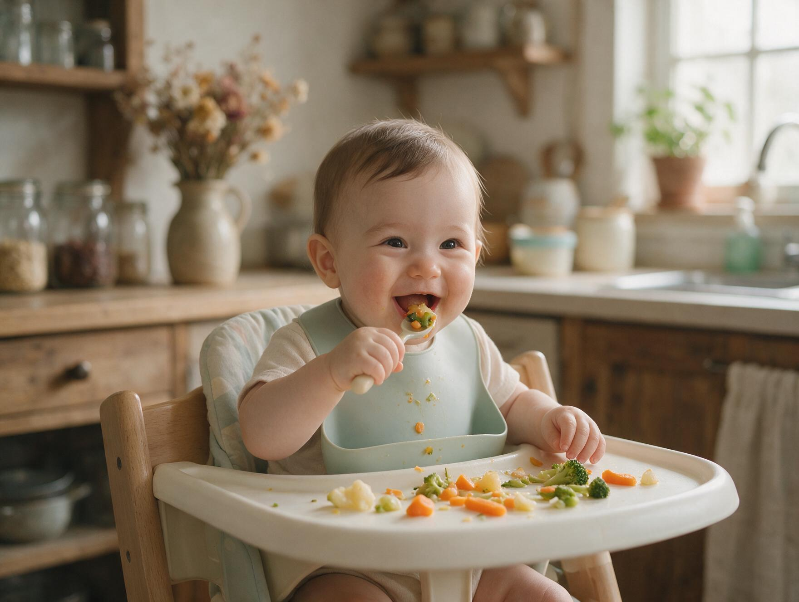
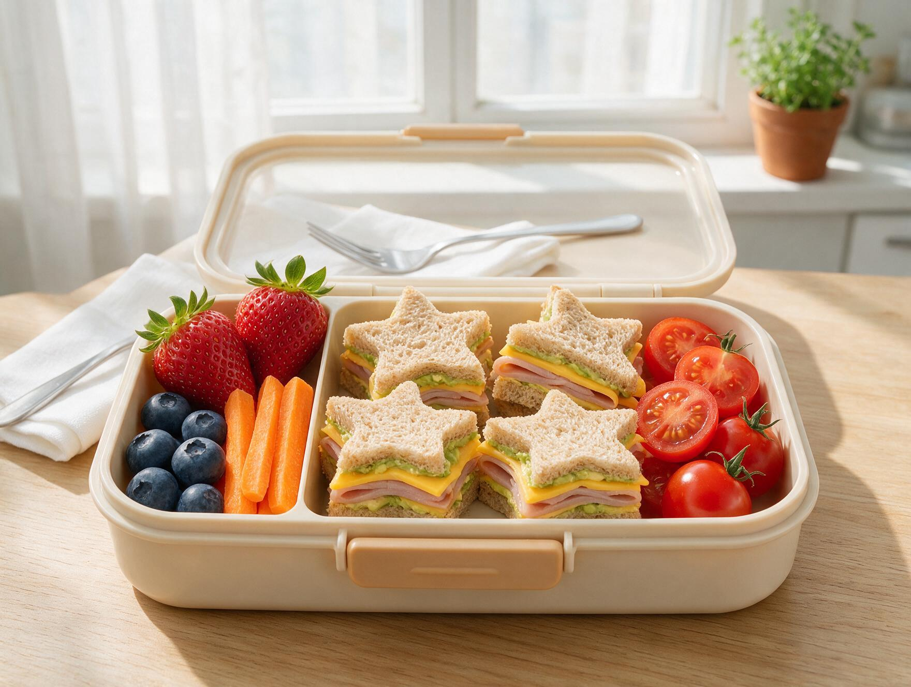

Soy la Dra. Dalila Peñaranda, pediatra y especialista en nutrición infantil. El mismo océano del mural que acompaña a mis pacientes, ahora en tu pantalla: alimentación, crecimiento y sueño con calma, sin culpas y con evidencia. Presencial y virtual desde cualquier país.
Fotografías ilustrativas de la maqueta: se reemplazarán por las fotos reales de la doctora y de su consultorio.
Pediatría y nutrición infantil en una sola consulta. Credenciales de ejemplo — se reemplazarán por las reales.
Universidad por confirmar · ejemplo
Especialización por confirmar · ejemplo
Consulta virtual internacional
Afiliaciones por confirmar · ejemplo
En video y a tu ritmo, desde cualquier país. La compra se realiza en Hotmart.

De la leche a la cuchara: 6 a 12 meses, paso a paso.

Menús escolares prácticos y sin peleas en la mesa.
Siestas, noches y despertares con rutinas respetuosas.
Cursos, precios e imágenes de ejemplo — se reemplazarán por el material real de cada curso.
Artículos gratuitos del blog. (Títulos de ejemplo.)
Porciones reales, apetito variable y señales de alarma.
Dónde está, cómo se absorbe y cuándo suplementar.
Guía tranquila para noches intranquilas.
Testimonios ilustrativos — se reemplazarán por reales.
«Salimos con un plan claro y sin culpas. ¡Mi hija por fin come verduras!»María F. · mamá de Salomé, 3 años · ejemplo
«La consulta virtual fue igual de cercana, desde otro país.»Carlos R. · papá de Emilio, 14 meses · ejemplo
Escríbeme por WhatsApp y confirmo personalmente tu horario.
Consultorio — ciudad y dirección por confirmar. Valoración completa con plan por escrito.
$180.000 COPprecio de ejemplo
Agendar por WhatsAppVideollamada desde cualquier país; plan e indicaciones por correo.
45 USDprecio de ejemplo
Agendar por WhatsApp